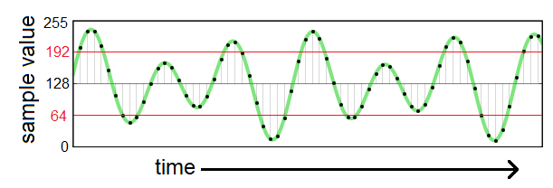

| Lecture: | 3 |
| Objectives: | C conditionals with signed, unsigned operands, and logical operators. |
C conditional statements
If Then Else
The following code segment shows the most general form of an if-then-else statement. Let's examine the structure and how that structure is executed by a computer one line at a time from top to bottom.
if (condition01) {
body01;
} else if (condition02) {
body02;
} else if (condition03) {
body03;
} else {
body04;
}
The first thing that a computer does when it sees this if-then-else
structure is to evaluate condition01. All the conditions in the
if-then-else structure must be expression involving variables and
operators from a previous lecture. A condition is evaluated by
looking up the values for the variables and applying operations to
the operands until the condition is reduced to a single value.
It is not unusual to write a condition as clauses joined together with the conditional operators && and ||. A clause is typically a magnitude comparision between values using the relational operators like >=, < and ==. For example, the following condition has two clauses (x>20) and (y<=10) joined together with the AND conditional operator &&.
((x > 20) && (y <= 10))
Given values for x and y, the condition is evaluated by first determining
the truth of each of the clauses and then ANDing them together.
For example, let's examine the truth value of the condition above
if x = 20 and y = 10.
- the first clause (x > 20) is FALSE because 20 is not greater than 25,
- the second clause (y <= 10) is TRUE because 10 is less and or equal to 10,
- the condition is FALSE because FALSE && TRUE is FALSE.
After the computer completes execution of body01, the computer exits the if-then-else structure and starts executing the first statement following the if-then-else.
If condition01 is FALSE, then the computer goes on to evaluate the truth of condition02. If condition02 is TRUE, then the computer executes body02, and when done, exits the if-then-else and resumes execution with the first statement following the if-then-else.
If condition02 is FALSE, then the computer goes on to evaluate the truth of condition03. If condition02 is TRUE, then the computer executes body03, and when done, exits the if-then-else and resumes execution with the first statement following the if-then-else. This pattern of "else if" can continue on for as many (or few) cases as needed.
Only if all the conditions are FALSE, does the computer execute body04. As in the previous cases, when body04 has been executed, the computer exits the if-then-else structure and executes the following statement.
Let's look at a practical example to understand more clearly how an if-then-else statements work.
if (x > y + 5) {
a = 0;
} else if (x > y) {
a = 1;
} else if (x > y-5) {
a = 2;
} else {
a = 3;
} // end if
When analyzing or designing complex if/then stuctures, I often find
it helpful to draw a picture illustrating the relationship between the
variables in the conditional statements. In the if/then structure
given above, the two variables are x and y. In the case of number magnitudes,
the reliable number line is a good choice. In the figure below I have
drawn a number line in red showing the possible values of x. As you
move to the right on the number line, the values of x get larger and
as you move left, the values of x get smaller. Instead of marking the
number line at explicit values of x, like x=0 or x=10, I marked the
the number line at y (and y-5 and y+5).According to the first condition in the if-then-else statement, if the x > y+5 then the a is assigned 0. This is illustrated by the open circle (denoting non-inclusive) above the mark for y+5 and its associated right number line arrow.
The next condition (x>y) is only checked if the first condition was FALSE, implying that x <= y+5. If (x > y) then a is assigned the value 1. This is illustrated by the line between the open circle above y (because x > y) and the closed circle above y+5 (because x <= y+5).
You can use a similar line of reasoning to form the other intervals above the x numbering line.

You can use this figure to determine the a for the x,y values given in the table below. For example, in the first row of the table, y=20. So imagine that the mark "y" on the number line is 20. On the top row x=10, so this value is 10 less than y. Consequently, the value of x falls to the left of the "y-5" mark and consequently a=3.
Right click on this web page and select "view page source" to see the hidden table containing the answers.
| x | y | a |
| 10 | 20 | |
| 15 | 20 | |
| 20 | 20 | |
| 25 | 20 | |
| 30 | 20 |
((x >= 25) && (z == '4'))
This conditional statement consists of two clauses, "(x >=25)" and
"(z == '4')" combined with && - a logical AND. None of the clauses
have both a x and z in them. Consequently, it can be very difficult
to illustrate the relationship between x and z in a figure.
if ((x >= 25) && (z == '4')) {
b = 0;
} else if ((x < 15) || (z == '2')) {
b = 1;
} else if ((x != 25) && (z < '4')){
b = 2;
} else {
b = 3;
} // end if
The analysis of this if/then structure requires you to test each
value of x and z in each clauses, and combine the clauses according
to the conditional logical operation given. If a condition is false,
then you need to move on to the next condition.
Let's work through the top row of the following table to determine the value of b. In the top row x=10 and z='0'.
| variable/value | condition | truth value |
| First condition | ||
| x=10 | x>=25 | false |
| z='0' | z=='4' | false |
| ((x >= 25) && (z == '4')) | false | |
| Second condition | ||
| x=10 | x<15 | true |
| z='0' | z=='2' | false |
| ((x < 15) || (z == '2')) | true | |
Complete the remaining rows in the table. Afterwards, right click on the web page and select "view page source" to see the answers in the complete table.
| x | z | b |
| 10 | '0' | |
| 15 | '1' | |
| 20 | '2' | |
| 25 | '3' | |
| 30 | '4' |
printf
One of the practical differences between C and C++ is the way you send text to the terminal. Instead of the familiar cout, C uses a built-in function called printf. The simplest call to printf is where the argument to printf is a string of text surrounded by quotes. The text inside the quotes is sent to the terminal, writing whatever message you need to send to the user. For example, the printf("Another sunny day in Colorado!\r\n"); Would generate the output:Another sunny day in Colorado!
Let's talk about the "\r\n" at the end of the string. Characters preceeded with a backslash character "\" are said to be "escaped". Eascape character are usually associated with terminal function like moving the cursor. Before we delve more into specifics of some common escape characters. Let's talk a little how normal ASCII characters displayed on a terminal.
Every printed character is sent and displated on the terminal at the current cursor location. After a character is printed on the terminal, the current cursor location is shifted one position to the right. When the cursor is at the far right edge of the terminal window, printing the next chracter at the end of the line will cause the current cursor location to jump one line down and go back to the far left edge of the terminal. This a wrap-around of text that you see with computer print outs of really long lines of code/text. This is default movement of the current cursor location is very limiting; we (programmers) would like more control of the current cursor location and this is where escape characters come intto play.
Now back to the pair of escape characters "\r\n" at the end of the "Another sunny day in Colorado!\r\n" The "\r" is a carriage return, causing the current cursor location to move all the way to the left on the current line. The "\n" is a new line character causing the current cursor location to move down one row on the terminal without changing the left/right position of the current cursor location. Hence the combination of the two causes the current cursor location to move down one row and to the left edge of the terminal. You will almost always end your printf statments with the pair "\r\n" so that the next printed line is neatly justified below what was just printed.
Two final notes. First, it does not matter which of "\r" or "\n" you do first, but most programmers will use the order presented here. Second, there are lots of other eascape characters that I have note presented, including one to make a bell sound and another to make a horziontal tab.
There will be times when you will want printf to print the value of a variable. In these cases you will have to modify the string to include format specifiers where you want the variable to appear. There are a variety of formatting specifiers, all consisting of a percentage sign "%", followed by a letter. Different letters allow you to choose how the variable is represented. The following table lists a few of the format specifiers you may want to use this semester.
| Format specifier | representation |
| %d | Signed decimal - use for int8_t data types |
| %u | Unsigned decimal - good for uint8_t data types |
| %h | Hexadecimal |
| %c | Character |
| %s | String - use for NULL terminated strings |
The value of x is 23immediately after the printf statement was executed. In the string "%d" is a place holder for the decimal value of the numerical value given by the parameter following the string. While "%d" represents the numerical value is decimal, "%x" represents the numerical value in hexadecimal. Thus, the statement printf("The value of x is %x\r\n",x); would cause the terminal to display
The value of x is 17because 2310 = 1716.
In a case when the string contains more than one formatting code, each formatting code is assigned a value from the variables following the string in a corresponding left to right order. To illustrate, let's try another example, again let x=23 when the statement printf("%d_10 + 0x%x = %d_10\r\n",x,19,x+19); is executed. The terminal output would display
23_10 + 0x13 = 42_10
The formatting code "%s" can be used to print null terminated strings. To understand null termination of a string, you first must appreciate that a string is represented as an array of characters in the computer's memory. When printing a string, the computer needs to know when to stop printing characters. This could happen in one of two ways; first you could tell the computer how many characters are in the string, or second, you could have a special character that indicated the end of the string. C uses the second method and calls teh special character denoting the end of the string "NULL". NULL is just a byte with value 0. If you are storing a string in an array, you need to make sure to reserve a space for the NULL character.
Switch/case
You will normally use the switch/case structure to check if a variable is equal to one of many potential values. Each value is called a case and has a body consisting of zero or more statements. You almost always end a case with a with a "break" statement, allowing execution to jump out of the switch statement without checking any of the other case statements. Also, there is a special case called "default" which is executed if no other case was executed. This is handy way to check if you have an invalid or out of range input. Let's trace the execution of the following code under the inputs given in the table following the code.
switch(grade) {
case 'A' :
printf("Excellent!\r\n" );
break;
case 'B' :
case 'C' :
printf("Well done\r\n" );
break;
case 'D' :
printf("You passed\r\n" );
break;
case 'F' :
printf("Better try again\r\n" );
break;
default :
printf("Invalid grade\r\n" );
}
| grade | output |
| 'D' | |
| 'B' | |
| 'a' |
Test your understanding
You can find the solutions embedded in the "source code" for this web page by right mouse clicking on this web page and selecting "view source". The solutions are in HTML comments.- Use the folllwing if/then structure to complete the table below.
if ((x > 15) && (y > 10) && (z < 30)) { a = 0; } else if ((x <= 20) && ( y != 30) && (z >= 30)) { a = 1; } else if (((x >= 15) || (y != 15)) && (z < 40)) { a = 2; } else { a = 3; } // end ifx y z a 10 30 50 15 25 40 20 20 30 25 15 20 30 10 10 - A common application for embedded systems is to periodically sample
an audio source (like a microphone) and store/analyze the samples. A
continous-time audio waveform is shown in green in the figure below.
The amplitude of the green waveform is proportional to the volume.
In this example, the magnitude of the amplitude is bound by 255 to 0 and
the waveform is centered around 128. The amplitude of the waveform is
proportional to its loudness. The range of values and centering at 128
is a result of the hardware used to amplify the
micophone and the analog to digital converter in the microcontroller.
In our case we will assume that whenever
the audio waveform goes above 192 or below 64, the sound is "loud".
The block dots on the audio wave are the sampled values. Note that
the horziontal distance between consectutive dots is about the same.

Your task is to write a single if-then statement to determine if the the current sample would be considered loud and to print a message if it is. You can assume that the current sample is being held in a variable called currentSample. - Whenever the audio waveform crosses 128, we call that a "zero crossing". The number of samples between a zero crossing can be used to determine the frequency of the audio waveform - an important characteristic of a waveform. Write an if-then structure that analyzes two consectutive audio samples and determines if a zero crossing happened and if so, what direction. The audio samples are stored in two variable, previousSample and currentSample. So, for example, if previousSample = 140 and currentSample = 120 then we would have had a zero crossing with negative slope. Your algorithm should print "Positive zero crossing", "Negative zero crossing", or "No crossing". So in our example, the algorithm should print "Negative zero crossing".
- Write code to determine if the audio waveform has reached a local minimum or maximum by using three samples called currentSample (current time), firstPreviousSample (at time - 1), secondPreviousSample (at time - 2). If the audio waveform is at a maximum print "local max", if the the audio waveform is a minimum print "local min", else print "Not at min/max".
- Carelessly structing if-then statements can generate vastley different
results then the ones you intended. Execute the following code snippets
for the values of x given to see how structure effects the result. For
each value of x given in the left column, execute the code snippet and
determine the value after the code snippet is finished executing.
snippet 1 snippet 2 snippet 3 if (x > 100) { x = x - 10; } if (x > 95) { x = x -10; }if (x > 100) { x = x - 10; } else if (x > 95) { x = x -10; }if (x > 100) { x = x - 10; } else { x = x -10; }x = 200 x = 100 x = 50